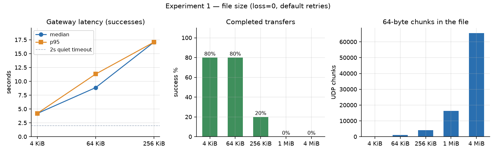
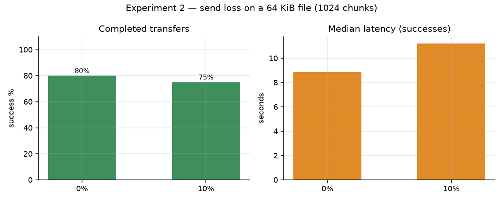
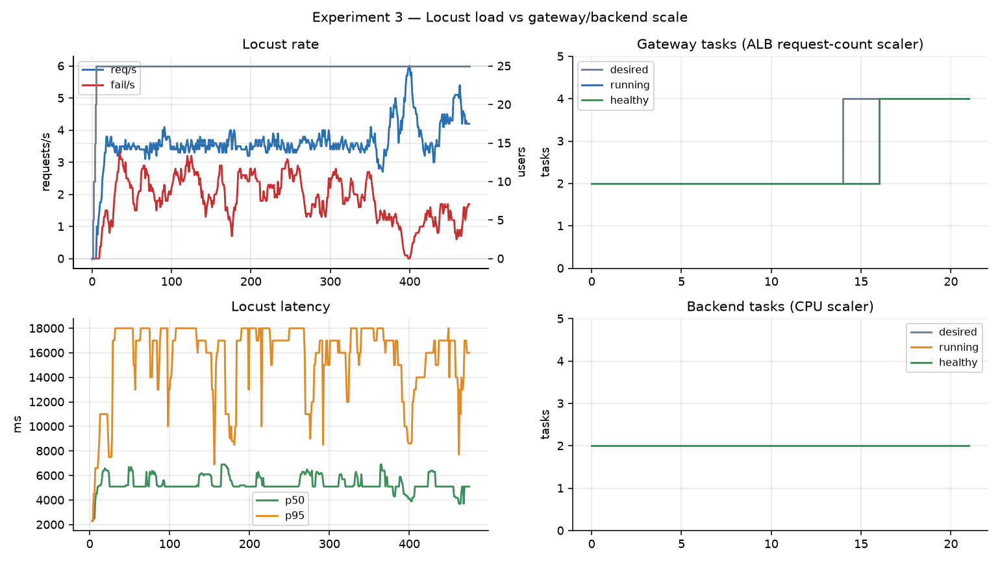

Client → ALB → gateway (HTTP, MAX_INFLIGHT=4) → NLB → backend (UDP, WORKERS=8) → S3. 64-byte chunks, 4 MiB cap.
| 1. File size | 2. Send loss | 3. Load / scale | |
|---|---|---|---|
| HW tool | HW4 sweep | HW4 sweep | HW5/6 Locust + watch |
| Fixed | SEND_LOSS=0, retries 5/5 | 64 KiB (1024 chunks) | 64 KiB, 25 users, 8 min |
| Vary | 4 KiB → 4 MiB | SEND_LOSS 0 then 10 | concurrency; two scaler metrics |
Gateway scales on ALBRequestCountPerTarget=40. Backend scales on CPU=40%. Min 2 / max 4 tasks each.

Localhost all five sizes finished in 2.0–2.3 s. AWS blasts the same chunks through a UDP NLB. Tail-drops leave long missing ranges; RETY bursts then overflow the 32-deep worker queue.
The 2 s quiet timeout is still the floor. Extra seconds are retry rounds, not send time.

Locally, 10% still finished every 64 KiB file (10–12 s) and 20% collapsed to 1/8. On AWS the NLB already supplies enough loss that 1024-chunk files live near the 5-round budget. Small files still have slack.
Backend logs: Overloaded: dropped incoming datagram plus consecutive missing-chunk ranges.

ALB can scale on requests/target. NLB cannot, so the backend only watches CPU — and the average never crossed the line.
Same Locust FastHttpUser pattern as HW6. Watch script from HW6, two services.
SEND_LOSS mainly adds more 2 s rounds.Talk ~4:30. Arrow keys or space. Tear down: scripts/destroy.sh --yes.